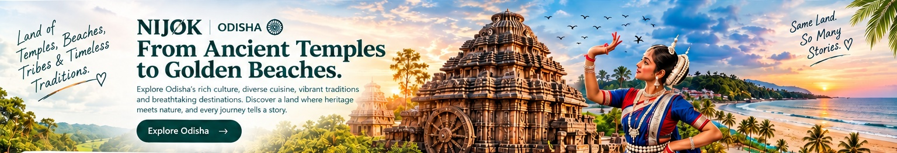
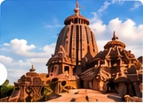
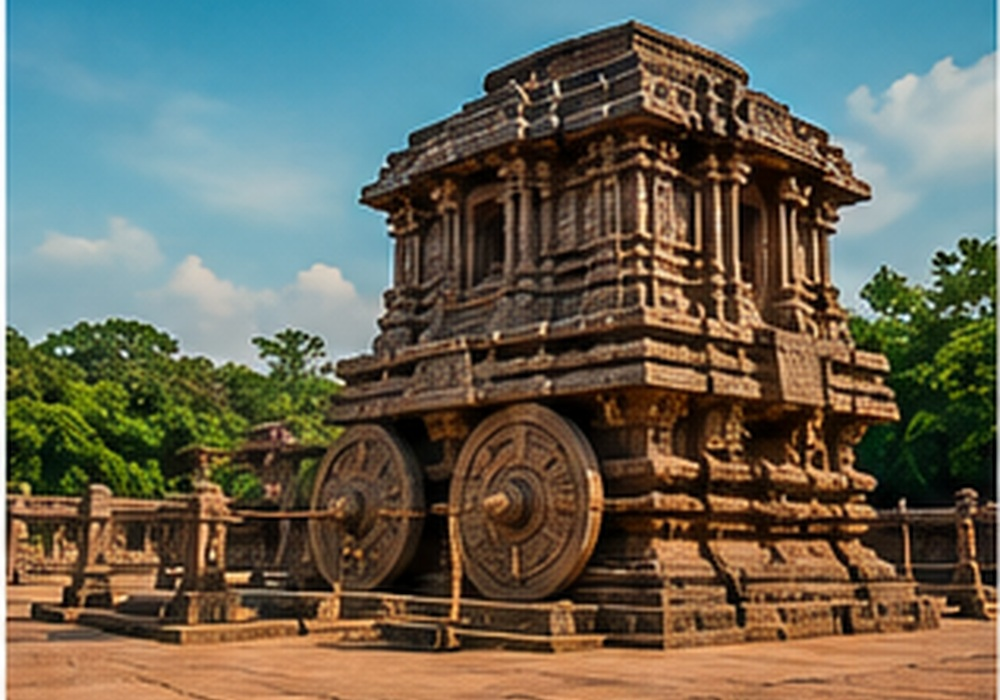
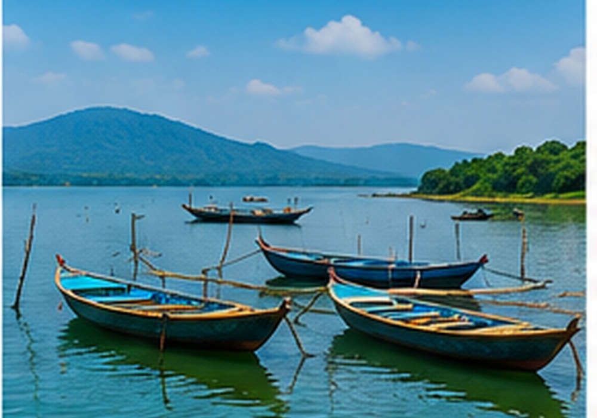
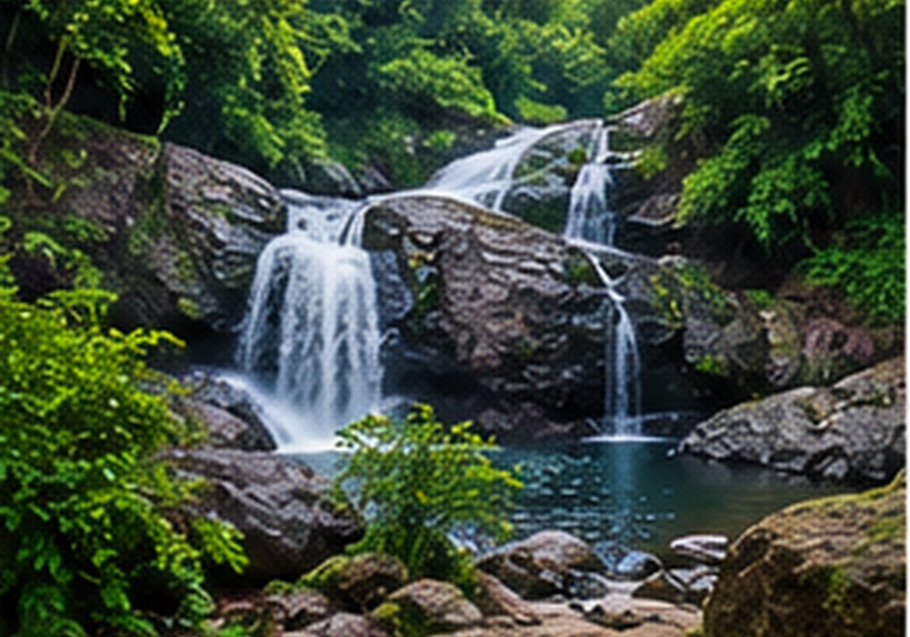
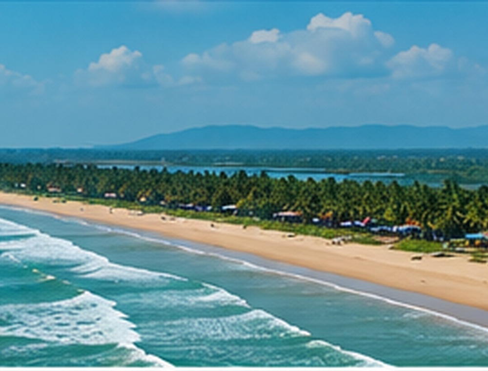
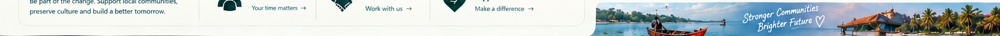

Temples, Beaches,
Tribes & Timeless
Traditions. ♡
From Ancient Temples
to Golden Beaches.
Explore Odisha's rich culture, diverse cuisine, vibrant traditions and breathtaking destinations. Discover a land where heritage meets nature, and every journey tells a story.
Explore OdishaSo Many
Stories. ♡
Featured Destinations
View All
Jagannath Temple
Puri
Temple · Heritage · Culture
Konark Sun Temple
Konark
Heritage · Architecture · History
Chilika Lake
Chilika
Nature · Birds · Adventure
Similipal National Park
Mayurbhanj
Wildlife · Forest · AdventurePuri Beach
Puri
Beach · Relaxation · FoodGet Involved
Be part of the change. Support local communities, preserve culture and build a better tomorrow.

From ancient temples to beautiful beaches, from tribal art to local cuisine, Odisha has it all. Plan your journey today!
Plan Your Trip Good FoodGreat People
Amazing Odisha ♡
